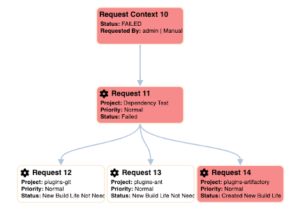
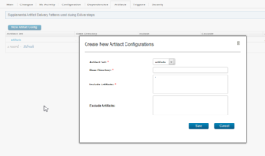

This article was originaly published in 2019.12.17
This release of UrbanCode Build is a maintenance release and contains a number of new features, feature enhancements and bug fixes. This release is recommended for all customers.
The Request Context page displays information about related process requests. Displayed is the tree view of the build requests in a single context. Child nodes can be hidden, by clicking on the parent node. When nodes are hidden, a black border is shown on the parent node. Click the parent node to expand its child nodes. 
Build artifacts can now be configured on a build process in addition to a process template. Configuring artifacts for a build process on templates provides for standardization across build processes. However, there are times when a more specific configuration is needed for a given project. Configuring artifacts on the build process allows for this specialization. The artifacts configured at the build process level are combined with those defined at the process template level and applied to the relevant build. 
| Add ability to define artifact sets at the build process level |
| UCBuild Notification event for build starts |
| User interface enhancements to source Changes lists |
| PH16417 | Property values and definitions that are non-secure but have an encrypted value are decrypted |
| PH17999 | Fixed recipient generators table has a number of issues |
| PH18675 | UrbanCode Deploy plug-in version 48 ignores time out settings |
For supported platforms and requirements, see the reports that can be dynamically generated using the Software Product Compatibility Reports (SPCR) tool.
Note: Some supported plug-ins have system requirements that vary from the core product. Information on system requirements for individual plug-ins is available on the download page for that plug-in.
To get started quickly, IBM UrbanCode Build is shipped with an Apache Derby database. Apache Derby is not supported for production environments. As you plan your production topology, review the product documentation.
IBM UrbanCode Build supports integrations with many different tools in the form of job steps. Each IBM UrbanCode Build plug-in is a separate download and installation available on our plug-in page .
To learn more about new enhancements in this release, click the What’s New tab.
Need updatingTo learn more about IBM UrbanCode Build, see the documentation .
For help installing or using IBM UrbanCode Build, post your questions in the forums or contact support .
To suggest an enhancement to the product, visit the RFE Community .
For information from support, including FAQs, visit the IBM Support portal. You can configure the support portal to view information about specific products.